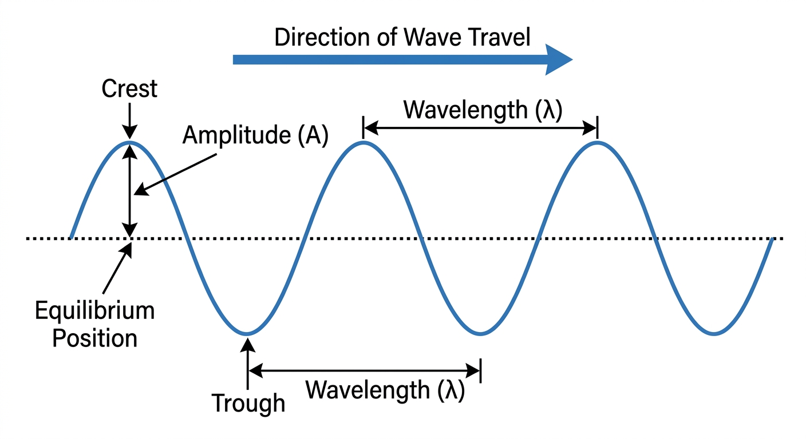
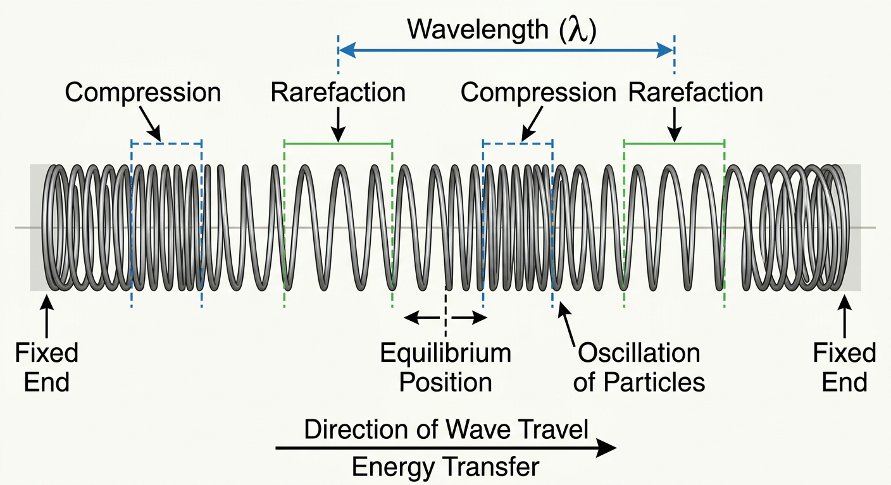
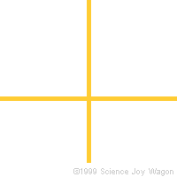

1. Measurement, units & math tools
Vectors and scalars
- A vector is a physical quantity that has both a magnitude (size) and a direction. Examples: displacement, velocity, acceleration, force, momentum.
- A scalar is a physical quantity that has only a magnitude. Examples: distance, speed, mass, time, energy.
- A vector can be resolved into perpendicular components. The resultant of two or more vectors is found by vector addition.
Components of any vector A at angle θ from the horizontal
A vector A (the rust arrow) drawn from the origin up and to the right at angle θ above the horizontal. It is the hypotenuse of a right triangle. The horizontal leg along the x-axis is the horizontal component Ax = A cos θ; the vertical leg is the vertical component Ay = A sin θ. The two components meet at a right angle, and together they add (tip-to-tail) to give the original vector.
To get the magnitude of a resultant from two perpendicular components, use the Pythagorean theorem (see math tools below). Perpendicular velocities and perpendicular forces both add this way.
The metric system & SI units
Physics uses SI units. The fundamental units you must know are the meter (m) for length, the kilogram (kg) for mass, and the second (s) for time. Other units (newton, joule, watt, volt, and so on) are built from these.
Prefixes rename powers of ten — for example, 1 kilometer is 103 meters and 1 millimeter is 10−3 meters. The full prefix list is in the reference data tables.
Geometry & trigonometry you need
These appear on the reference tables and are used throughout the course.
2. Kinematics (motion)
Definitions
- Displacement (d) tells how far an object ends up from its starting position, regardless of the total distance it travelled. Displacement is a vector; distance is a scalar.
- Average velocity (v-bar) is displacement divided by the time interval over which it happened.
- Instantaneous velocity (v) is how fast an object is moving at one specific moment.
- Average speed is total distance divided by total time.
Position–time graphs
- How far the object is from the detector: read the value on the vertical axis.
- How fast the object is moving: look at the slope (steepness) of the line. For a curved graph, take the slope of a tangent line to get instantaneous speed.
- Which way the object moves: look at the direction of the slope. A line sloping up like a forward slash means moving away from the detector; a line sloping down like a backslash means moving toward the detector.
- Curvature shows acceleration. Concave up (a U shape) means positive acceleration; concave down (a frown shape) means negative acceleration.
Four position-time curves for uniform acceleration (position d on the vertical axis, time t on the horizontal axis). Described in words:
- Speeding up in the positive direction: a curve that starts nearly flat and bends upward more and more steeply (concave up, positive slope getting steeper).
- Slowing down in the positive direction: a curve that rises steeply then flattens out (concave down, positive slope getting gentler).
- Speeding up in the negative direction: a curve that starts nearly flat and bends downward more and more steeply (concave down, negative slope getting steeper).
- Slowing down in the negative direction: a curve that falls steeply then flattens out (concave up, negative slope getting gentler).
These four shapes can be combined to describe more complicated motion.
Velocity–time graphs
- How fast (speed): read the value on the vertical axis.
- Which way: above the horizontal axis means moving away from the detector; below the axis means moving toward the detector.
- How far (displacement): find the area between the line and the horizontal axis.
- Acceleration is the slope of a velocity-time graph.
- You cannot find the object’s location from a velocity-time graph.
Velocity v is on the vertical axis and time t on the horizontal axis. The straight line rising from left to right shows constant acceleration, and the line’s slope is the acceleration. The shaded region between the line and the time axis is the displacement. A line above the axis means moving away from the detector; below the axis means moving toward it.
Acceleration
- Acceleration tells how much an object’s velocity changes each second.
- When an object speeds up, its acceleration points in the direction of motion. When it slows down, its acceleration points opposite the motion.
- In free fall near Earth’s surface, acceleration is g, about 9.81 m/s2 (often rounded to 9.8, and to 10 for quick estimates).
- Units of acceleration are meters per second squared (m/s2, also written m/s/s).
Special equations for displacement
- At constant speed, displacement is speed times time. This includes the horizontal part of projectile motion.
- When an object starts from rest and speeds up, or slows to a stop, use one-half a t squared, or the fuller form below.
Algebraic kinematics — the method
- Define a positive direction (usually “away from the detector”) and label it.
- State in words which part of the motion you are analyzing, for example “from launch to the peak of the flight.”
- Fill out a chart of the five kinematics variables — with signs and units: displacement d, initial velocity v-initial, acceleration a, final velocity v-final, and time t.
- If you know three of the five variables, the problem is solvable. Pick the equation that uses what you have.
The three kinematics equations
A fourth equation is sometimes handy — it is the area of a velocity-time graph written as the area of a trapezoid:
Projectile motion
- For an object in free fall, the vertical acceleration is always g (about 9.81 m/s2 downward near Earth).
- The horizontal acceleration is always zero, so the only horizontal equation you use is displacement equals velocity times time (d equals v t).
- If an object is dropped, its initial velocity is zero.
- If launched upward, the speed it returns with at its original height equals the launch speed, but in the opposite direction.
- An object thrown upward slows as it rises; its vertical velocity is zero at the very top, so you may treat final velocity as zero at the peak.
- Velocities in perpendicular directions add with the Pythagorean theorem, just like perpendicular forces. The magnitude of an object’s velocity is its speed.
- Method: make two kinematics charts — one vertical, one horizontal. Time is the quantity they share.
3. Forces & Newton’s laws (dynamics)
Equilibrium
- An object is in equilibrium if it moves in a straight line at constant speed — this includes staying at rest.
- When an object is in equilibrium, the forces on it are balanced (the net force is zero).
Newton’s first law (inertia)
An object stays at rest, or keeps moving at constant velocity, unless an unbalanced force acts on it. An object’s inertia — its resistance to a change in motion — is directly proportional to its mass.
Newton’s second law
- Except for gravity, objects must be in contact to exert a force on each other.
- The net force and the acceleration point in the same direction — the direction in which the forces are unbalanced.
Solving force problems — the two-step process
- Draw a free-body diagram. Break any angled forces into components first if needed.
- Write one Newton’s-second-law equation for each direction. Start each equation in the direction of acceleration so you never get a “negative force”: up forces minus down forces equals mass times the vertical acceleration; left forces minus right forces equals mass times the horizontal acceleration. If the acceleration is downward, write down forces minus up forces instead.
A free-body diagram includes
- A labelled arrow for each force, starting on the object and pointing the way the force acts.
- A list of the forces, naming the object applying each force and the object experiencing it.
A box resting on a surface and being pushed to the right. Four labelled force arrows start on the object and point the way each force acts: FN the normal force points straight up; Fg the weight points straight down; Fapp the applied push points right; and Ff the force of friction points left, opposing the motion. If the box moves at constant velocity the up and down arrows balance and the left and right arrows balance; if any pair is unbalanced, the box accelerates in that direction.
Mass and weight
- Mass is how much material is in an object, measured in kilograms (kg). Mass does not change with location.
- Weight is the gravitational force a planet exerts on an object, measured in newtons (N).
- On Earth’s surface the gravitational field is about 9.81 N/kg (often rounded to 10 N/kg), so 1 kg of mass weighs about 9.81 N.
Normal force
- A normal force is the force of a surface pushing on an object that touches it. It always acts perpendicular to the surface.
- A platform (bathroom) scale reads the normal force.
Components of a diagonal force
When a force’s angle is measured from the horizontal:
To find the magnitude (the “amount”) of a resultant force from perpendicular components, use the Pythagorean theorem.
Inclined planes (ramps)
On a ramp, break the object’s weight into components parallel and perpendicular to the incline — do not use horizontal/vertical axes.
A block rests on a ramp tilted at angle θ from the ground. Three real forces act on it (solid arrows): the weight Fg = mg points straight down; the normal force FN points away from and perpendicular to the ramp surface; and friction Ff points up along the surface, opposing the slide. The weight is then split into two dotted components along the ramp’s own axes: the parallel component mg sin θ points down the slope (this is what pulls the block down the ramp and is balanced by friction), and the perpendicular component mg cos θ presses into the surface (balanced by the normal force). The dotted rectangle shows that these two components add back to the full weight.
Friction
- Friction is the force of a surface on an object, acting along the surface, in the direction opposite the object’s motion relative to that surface.
- The coefficient of friction is not a force — it is a number describing how “sticky” two surfaces are.
- Use the kinetic coefficient when the object is moving and the static coefficient when it is not. Both obey the same equation.
- Static friction can take any value up to a maximum. For two given surfaces, the maximum static coefficient is greater than the kinetic coefficient.
- Values for common surfaces are in the coefficients-of-friction table.
Newton’s third law
- The force of object A on object B is equal in size and opposite in direction to the force of object B on object A.
- A third-law force pair is this pair of forces. The two forces in a pair never act on the same object.
Two-body problems
- Draw one free-body diagram per object.
- Write net force equals mass times acceleration for each object separately.
- The two objects share the same acceleration.
- One rope means one tension.
Hooke’s law (springs)
The stretch or compression of a spring depends on the spring’s stiffness (its spring constant) and the force applied.
4. Circular motion & gravitation
Uniform circular motion
- An object moving at constant speed in a circle is still accelerating, because its direction keeps changing.
- This centripetal acceleration points toward the center of the circle.
- Centripetal force is the net force that produces circular motion. It is the sum of all the radial forces (forces along the radius) and points toward the center, perpendicular to the velocity.
An object travels clockwise around a circle. The velocity (blue arrow) always points along the tangent to the circle — here, at the top of the loop, it points to the right. The centripetal acceleration and the centripetal force (rust arrow) both point toward the centre, along the radius, at a right angle to the velocity. The speed stays constant; it is the constantly changing direction that requires this inward force.
Universal gravitation
- Every object with mass attracts every other object with mass. Gravitational forces are always attractive.
- The force follows an inverse-square law: double the distance and the force drops to one-quarter.
- Fg
- gravitational force, in newtons
- G
- universal gravitational constant, 6.67 × 10−11 N·m2/kg2
- m1, m2
- the two masses, in kilograms
- r
- distance between the centers of the two objects, in meters
5. Work, energy & power
All forms of energy are measured in joules (J).
Forms of energy
- Mechanical energy is the sum of a system’s kinetic and potential energy.
- Internal energy (Q) is heat energy that raises the temperature of the system; work done against friction increases it.
Work
- Positive work is done by a force parallel to the displacement.
- Negative work is done by a force opposite (antiparallel) to the displacement.
- No work is done by a force perpendicular to the displacement.
- Work is a scalar — it can be positive or negative but has no direction.
- The area under a force-versus-displacement graph is the work done.
The work–energy theorem — the method
- Define the object or system you are describing.
- Define the two positions (start and end) you are comparing.
- Draw an annotated energy bar chart.
- Write one equation with one term per bar: initial energy plus or minus work equals final energy.
Power
- Power is the work done (or energy used) each second.
- Units are joules per second, called watts (W).
Energy in collisions
- In an elastic collision, the system’s mechanical (kinetic) energy is conserved.
- Collisions where objects stick together cannot be elastic (they are inelastic).
- Collisions where objects bounce apart may or may not be elastic.
6. Momentum & impulse
Momentum
- Momentum is mass times velocity. Its direction is the same as the direction of motion.
- Units are newton-seconds (N·s), equivalent to kilogram-meters per second.
Impulse
Impulse can be found two ways: as the change in an object’s momentum, or as the net force multiplied by the time it acts. Impulse is the area under a force-versus-time graph, and has the same units as momentum (N·s).
Conservation of momentum
- When no external force acts on a system, its total momentum cannot change.
- The total momentum of two objects before a collision equals their total momentum after.
- Momentum is a vector: momenta in the same direction add; momenta in opposite directions subtract.
- A system’s center of mass obeys Newton’s second law — its velocity changes only when an external net force acts.
7. What is conserved?
- Mechanical energy is conserved when no net work is done by external forces (and there is no internal-energy conversion, such as friction heating).
- Momentum in a direction is conserved when no net external force acts in that direction.
- Mass–energy is conserved — mass can convert to energy and back, related by E equals m c squared.
- Charge is conserved — it can be moved or neutralized but not created or destroyed.
8. Waves & sound
Wave anatomy
- Crests are the high points; troughs are the low points.
- Amplitude (A) is the distance from the midpoint to a crest or trough. It determines the energy the wave carries.
- Wavelength (λ) is the distance between identical parts of the wave (for example, crest to crest).
- Frequency (f) is the number of waves passing a point each second, measured in hertz (Hz).
- Period (T) is the time for one wavelength to pass a point.

A transverse wave drawn as a smooth curve travelling to the right along a dotted horizontal equilibrium position line. The high points are crests and the low points are troughs. The amplitude (A) is the vertical distance from the equilibrium line up to a crest. One wavelength (λ) is the horizontal distance from one crest to the next, or one trough to the next. An arrow labelled “Direction of Wave Travel” points to the right; the medium itself moves up and down, at right angles to the direction the wave travels.
Key facts
- When a wave moves from one material to another, its frequency stays the same.
- The speed of a wave depends on the material it travels through.
- It is the disturbance that travels, not the material itself.
Relating frequency, period, wavelength, and speed
Transverse and longitudinal waves
- In a transverse wave the material vibrates at right angles to the direction the wave travels. Waves on a string and all electromagnetic waves (including light) are transverse.
- In a longitudinal wave the material vibrates parallel to the wave’s direction. Sound waves are longitudinal.
- All electromagnetic waves travel at 3.0 × 108 m/s in air or vacuum. Light can travel through a vacuum; sound cannot.
- The higher the tension in a string, the faster a wave moves along it.

A longitudinal wave shown on a horizontal spring (slinky) stretched between two fixed ends. The coils bunch together in compressions and spread apart in rarefactions. One wavelength (λ) is the distance from one compression to the next. Arrows for “Direction of Wave Travel” and “Energy Transfer” point to the right, while individual particles oscillate back and forth parallel to that direction, about their equilibrium position. Sound is a longitudinal wave.
The electromagnetic spectrum
Visible light is one small slice of the electromagnetic spectrum. All electromagnetic waves travel at 3.00 × 108 m/s in a vacuum; they differ only in frequency and wavelength.
A horizontal bar divided into regions, from lowest frequency and longest wavelength on the left to highest frequency and shortest wavelength on the right: radio waves, microwaves, infrared, visible light, ultraviolet, X-rays, and gamma rays. The visible-light slice is enlarged into its colours — red, orange, yellow, green, blue, violet. Red has the longest wavelength and lowest frequency (about 3.84 × 1014 Hz); violet has the shortest wavelength and highest frequency (about 7.69 × 1014 Hz). Full values are in the electromagnetic-spectrum table.
Interference and superposition
- Interference happens when waves arrive at the same point at the same time.
- Constructive interference: crest meets crest, giving a larger amplitude.
- Destructive interference: crest meets trough, giving a smaller amplitude.
- Superposition: where pulses overlap, add their displacements to find the result.
- Beats: two waves of slightly different frequency interfere to make beats. The beat frequency equals the difference between the two frequencies.
Standing waves resonance added from core curriculum
- A standing wave appears to stay in one place. It forms when an incident wave and its reflection overlap in a confined region (a special case of interference).
- Nodes are the stationary points; antinodes are the points of largest amplitude.
- The fundamental is the lowest-frequency standing wave that fits in the region. Wavelength is measured node-to-node-to-node.
- Resonance occurs when energy is transferred to a system at its natural frequency, building a large-amplitude standing wave.
Identical boundary conditions at both ends (such as a string fixed at both ends, or a pipe open at both ends):
Different boundary conditions at each end (such as a pipe closed at one end and open at the other):
The Doppler effect
- As a wave source approaches, an observer meets waves more often, so the observed frequency is higher.
- As a source moves away, the observed frequency is lower.
- The source’s actual frequency does not change — only the apparent frequency does. The Doppler effect is not related to amplitude.
These animations compare a stationary source with a moving one. (They loop; the written description below each carries the information.)
A source that stays still emits circular wavefronts as evenly spaced concentric circles. Because it is not moving, observers on every side measure the same wavelength and frequency — there is no Doppler shift.
As the source moves, the wavefronts bunch together ahead of it and spread apart behind it. An observer the source is approaching meets crests more often and hears a higher frequency (shorter wavelength); an observer it is moving away from hears a lower frequency (longer wavelength). The source’s own frequency never changes.
Diffraction added from core curriculum
Diffraction is the spreading of waves as they pass an obstacle or go through an opening. How much the wave spreads depends on the wavelength compared with the size of the opening or obstacle: the closer they are in size, the more the wave spreads.
Straight (plane) wavefronts travel from the left toward a barrier with a small gap in it. After passing through the opening the waves are no longer straight — they bend and spread out in curved (circular) wavefronts on the far side. The narrower the gap is compared with the wavelength, the more the waves spread. The same spreading happens when waves pass the edge of an obstacle.
Sound
- Pitch depends on the sound wave’s frequency.
- Loudness and the energy carried depend on the wave’s amplitude.
- The speed of sound in air is about 331 m/s at STP (and roughly 340 m/s at ordinary room temperature).
- People hear sounds from tens up to thousands of hertz; most musical notes are in the hundreds of hertz.
9. Light, reflection & refraction added from core curriculum
This whole topic is required by the New York State core curriculum but was not on the fact sheet, so it is developed fully here.
Reflection
When a wave bounces off a surface, the angle it arrives at equals the angle it leaves at. Both angles are measured from the normal — an imaginary line drawn perpendicular to the surface.
A ray (the incident ray) strikes a flat mirror at a point. A dashed normal line is drawn perpendicular to the mirror at that point. The angle of incidence (θi), measured between the incident ray and the normal, equals the angle of reflection (θr), measured between the normal and the reflected ray. Both angles are always measured from the normal, not from the mirror surface.
Refraction — why light bends
- When a wave passes from one material into another, it can refract (bend) because its speed changes.
- Entering a slower (optically denser, higher-index) material, light bends toward the normal. Entering a faster material, it bends away from the normal.
- Crossing into a new material, the frequency stays the same, while the speed and wavelength change.
Index of refraction
The absolute index of refraction (n) compares the speed of light in a vacuum with its speed in a material. A larger n means light travels slower in that material and bends more. Index of refraction is inversely proportional to wave speed.
Snell’s law
An incident ray travels through medium 1 (lower index n1, e.g. air) and strikes the boundary with a denser medium 2 (higher index n2, e.g. glass). The dashed normal is perpendicular to the boundary. Because the light slows down, the refracted ray bends toward the normal, so the angle of refraction θ2 is smaller than the angle of incidence θ1 (the faint dashed line shows the un-bent path for comparison). The angles obey Snell’s law, n1 sin θ1 = n2 sin θ2, with both angles measured from the normal.
The indices, speeds, and wavelengths in two media are related by:
- n
- absolute index of refraction (no units)
- c
- speed of light in a vacuum, 3.00 × 108 m/s
- v
- speed of light in the material, in meters per second
- θ
- angle measured from the normal
- λ
- wavelength, in meters
Common index values (air 1.00, water 1.33, crown glass 1.52, diamond 2.42, and more) are in the indices-of-refraction table.
Total internal reflection & the critical angle
When light tries to pass from a slower (higher-index) material into a faster (lower-index) one — for example from water or glass into air — it bends away from the normal. Past a certain incidence angle, called the critical angle, the light can no longer escape and instead reflects entirely back inside. This is total internal reflection, and it is how fiber-optic cables trap light.
Dispersion
A material’s index of refraction is slightly different for different colors (frequencies) of light, so white light separates into a spectrum when it refracts. This spreading by color is dispersion — it is what forms a rainbow and what a prism does. Violet light bends the most, red the least.
The electromagnetic spectrum
Visible light is a small part of the electromagnetic spectrum. All electromagnetic waves travel at the same speed in a vacuum (c). Ordered from lowest frequency (longest wavelength) to highest frequency (shortest wavelength): radio waves, microwaves, infrared, visible light, ultraviolet, X-rays, gamma rays.
Within visible light, from lowest to highest frequency the colors run red, orange, yellow, green, blue, violet. So red has the longest wavelength and lowest frequency; violet has the shortest wavelength and highest frequency. Full values are in the electromagnetic-spectrum table.
↑ Back to contents10. Electricity & circuits
Electric charge
- Charge is measured in coulombs (C).
- Charge is conserved — it cannot be created or destroyed, though positive charge can neutralize negative charge.
- The smallest unit of charge is the elementary charge, e = 1.60 × 10−19 C. Any measured charge is a whole-number multiple of e; a result that is not a multiple of e should be rejected.
- One coulomb equals 6.25 × 1018 elementary charges. Lab charges are usually microcoulombs or nanocoulombs.
Coulomb’s law (force between charges)
- Fe
- electrostatic force, in newtons
- k
- electrostatic (Coulomb’s) constant, 8.99 × 109 N·m2/C2
- q1, q2
- the two charges, in coulombs
- r
- distance between the centers of the charges, in meters
Like gravitation, the electric force follows an inverse-square law. Unlike gravity, electric (and magnetic) forces can be either attractive or repulsive.
Electric field added from core curriculum
An electric field describes the force a charge would feel at a point in space. Its strength is found with a small positive test charge; the field points the way a positive charge would be pushed. The field between two oppositely charged parallel plates is uniform.
Field lines point the way a positive test charge would be pushed: away from positive charges and toward negative charges. Where they are closer together the field is stronger.
Field lines point straight out, away from the charge, evenly in all directions.
Field lines point straight in, toward the charge, from all directions.
Lines point away from both charges; between them they oppose, leaving a neutral point where the field is zero. Like charges repel.
Lines point toward both charges; between them is a neutral point where the field cancels. Like charges repel.
Field lines run from the positive charge to the negative charge, curving through the space between them. Opposite charges attract.
Between two oppositely charged plates the field is uniform — evenly spaced, parallel lines pointing from the positive plate to the negative plate.
Voltage, current, and resistance
- Voltage (potential difference) is provided by a battery and measured in volts. Rigorously, voltage is energy per charge.
- Current is the flow of charge through a conductor, measured in amps. Rigorously, current is charge per time.
- Resistance opposes current and is measured in ohms (Ω). It is provided by resistors, lamps, and other devices.
- Power is energy per time.
At constant temperature, common metal conductors obey Ohm’s law.
Resistivity — what makes resistance
The resistance of a wire depends on its material and shape: longer and thinner wires have more resistance.
- ρ
- resistivity, a property of the material, in ohm-meters
- L
- length of the conductor, in meters
- A
- cross-sectional area, in square meters
Material resistivities are in the resistivities table.
Electrical power and energy
The brightness of a bulb depends on the power it dissipates.
Series circuits
Components in a series circuit lie in a single path. The same current flows through every part.
The sum of voltage changes around any loop is zero (Kirchhoff’s loop rule), which is conservation of energy.
Parallel circuits
In a parallel circuit the path for current divides and then rejoins. Every branch has the same voltage, and the equivalent resistance is less than any single branch.
Current into a junction equals current out of it (Kirchhoff’s junction rule), which is conservation of charge.
Kirchhoff’s rules in action
These animations illustrate the two rules. (They loop continuously; the written description below each one carries all the information.)
Junction rule (1st law) — conservation of charge

Current flows in along one wire and splits to flow out along the other two. The total current arriving at the junction equals the total current leaving it.

Currents flow in and out along four wires. However the current divides, the amount entering the junction always equals the amount leaving — charge cannot pile up.
Loop rule (2nd law) — conservation of energy

A single-loop circuit with a battery and two resistors, labelled with voltages. The battery raises the potential by +4 V; the two resistors drop it by 1 V and 3 V. Around the loop the rises and drops add to zero: +4 − 1 − 3 = 0.

A battery with two resistors in parallel, showing that a circuit can contain several closed loops. The loop rule applies to each loop: around any loop, the voltage rises equal the voltage drops.
Meters
- An ammeter measures current and is connected in series with the element.
- A voltmeter measures voltage and is connected in parallel with the element.
Circuit symbols (cell, battery, switch, voltmeter, ammeter, resistor, variable resistor, lamp) are described in the circuit-symbols table.
↑ Back to contents11. Magnetism & electromagnetism added from core curriculum
- Moving electric charges produce magnetic fields. An electric current in a wire creates a magnetic field around it.
- The magnetic field of a permanent magnet points out of the north (north-seeking) pole and into the south (south-seeking) pole outside the magnet.
- Electromagnetic induction: relative motion between a conductor and a magnetic field can produce a potential difference (voltage) in the conductor. This is how generators work; the link between electricity and magnetism also runs motors.
- Magnetic forces, like electric forces, can be attractive or repulsive — unlike gravity, which is only attractive. (Like poles repel; opposite poles attract.)
- Energy can be stored in electric and magnetic fields and carried through conductors or space.
A bar magnet with its north pole (N) on the left and south pole (S) on the right. Outside the magnet, curved field lines leave the north pole, loop around above and below, and return into the south pole, forming closed loops. The lines are most crowded — the field is strongest — at the poles.
Two bar magnets placed end to end with opposite poles facing: the north pole of the left magnet faces the south pole of the right magnet. Field lines run straight across the gap, from the N pole into the S pole, linking the two magnets — opposite poles attract. (If like poles faced each other, the field lines would bend sharply apart and the magnets would repel.)
12. Modern physics added from core curriculum
This strand is required by the core curriculum and appears on the reference tables, but the fact sheet only touched it. It is developed fully here.
Quantization
- On the atomic scale, energy and matter come in discrete amounts — they are quantized, not continuous.
- Charge is quantized too. At the atomic level charge comes in multiples of the elementary charge (the charge on an electron or proton). At the subnuclear level, quarks carry fractions of the elementary charge.
The dual nature of light
Light behaves as both a wave (it diffracts and interferes) and a stream of particles called photons. On the atomic level both matter and energy show wave and particle characteristics. This wave–particle duality is the foundation of quantum mechanics.
Photons — the energy of light
Energy is emitted and absorbed in discrete packets called photons. A photon’s energy is proportional to its frequency (so higher-frequency light, like ultraviolet, carries more energy per photon than lower-frequency light, like infrared).
- Ephoton
- energy of the photon, in joules (or electronvolts)
- h
- Planck’s constant, 6.63 × 10−34 J·s
- f
- frequency, in hertz
- c
- speed of light in a vacuum, 3.00 × 108 m/s
- λ
- wavelength, in meters
The electronvolt (eV) is a small energy unit used for atoms: 1 eV = 1.60 × 10−19 J.
Atomic energy levels & spectra
- Electrons in an atom can only have certain discrete energies, called energy levels. The lowest is the ground state; the level where the electron is freed from the atom is ionization (taken as 0 eV).
- When an electron drops from a higher level to a lower one, the atom emits a photon whose energy is exactly the difference between the two levels. Absorbing a photon does the reverse. This is why each element has its own pattern of spectral lines.
The reference tables show these as ladder diagrams — horizontal rungs on an energy axis whose spacing gets closer together as they approach the 0 eV ionization line at the top:
Horizontal rungs on an energy axis: the ground state n=1 sits at −13.60 eV at the bottom, up to ionization at n=∞ and 0.00 eV at the top. The rungs crowd together near the top — n=2 at −3.40 eV, n=3 at −1.51 eV, and n=4, 5, 6 packed between −0.85 and −0.38 eV.
The ground state (level a) sits at −10.38 eV at the bottom, up to ionization (level j) at 0.00 eV at the top, with levels b through i bunched between about −5.74 and −1.56 eV. All ten values are listed in the table.
Exact values for every level are in the energy-levels table.
See how electrons jumping between energy levels produce an element’s spectral lines:
Mass–energy equivalence
Mass and energy are two forms of the same thing. The fundamental source of all the energy in the universe is the conversion of mass into energy.
The universal mass unit (u) is used for atomic masses; 1 u is equivalent to 9.31 × 102 MeV (megaelectronvolts) of energy.
The Standard Model of particle physics
The Standard Model explains what matter is made of. It has evolved from earlier models of the atom and states that atomic particles are built from smaller subnuclear particles, that the nucleus is a collection of quarks (which appear as protons and neutrons), and that every particle has a matching antiparticle with the opposite charge.
Matter divides into two big families: hadrons and leptons. Hadrons split again into baryons (made of three quarks — protons and neutrons are baryons) and mesons (made of one quark plus one antiquark). Leptons (such as the electron) are not made of quarks.
- Quarks come in six types. Up, charm, and top each carry a charge of +2/3 of an elementary charge. Down, strange, and bottom each carry −1/3.
- Leptons also come in six types. The electron, muon, and tau each carry −1 elementary charge. The three neutrinos (electron, muon, and tau neutrinos) carry zero charge.
The full quark and lepton charges are in the Standard Model table.
↑ Back to contents13. Complete equation reference
Every equation from the New York State Reference Tables for Physical Setting/Physics, grouped by section. Each is shown visually and written in words.
Mechanics
Electricity
Waves
Modern physics
Geometry & trigonometry
14. Reference data tables
The constants, values, and data from the reference tables, as accessible tables with row and column headers.
List of physical constants
| Name | Symbol | Value |
|---|---|---|
| Universal gravitational constant | G | 6.67 × 10−11 N·m2/kg2 |
| Acceleration due to gravity | g | 9.81 m/s2 |
| Speed of light in a vacuum | c | 3.00 × 108 m/s |
| Speed of sound in air at STP | 3.31 × 102 m/s | |
| Mass of Earth | 5.98 × 1024 kg | |
| Mass of the Moon | 7.35 × 1022 kg | |
| Mean radius of Earth | 6.37 × 106 m | |
| Mean radius of the Moon | 1.74 × 106 m | |
| Mean distance — Earth to the Moon | 3.84 × 108 m | |
| Mean distance — Earth to the Sun | 1.50 × 1011 m | |
| Electrostatic constant | k | 8.99 × 109 N·m2/C2 |
| 1 elementary charge | e | 1.60 × 10−19 C |
| 1 coulomb | C | 6.25 × 1018 elementary charges |
| 1 electronvolt | eV | 1.60 × 10−19 J |
| Planck’s constant | h | 6.63 × 10−34 J·s |
| 1 universal mass unit | u | 9.31 × 102 MeV |
| Rest mass of the electron | me | 9.11 × 10−31 kg |
| Rest mass of the proton | mp | 1.67 × 10−27 kg |
| Rest mass of the neutron | mn | 1.67 × 10−27 kg |
Prefixes for powers of 10
| Prefix | Symbol | Notation |
|---|---|---|
| tera | T | 1012 |
| giga | G | 109 |
| mega | M | 106 |
| kilo | k | 103 |
| deci | d | 10−1 |
| centi | c | 10−2 |
| milli | m | 10−3 |
| micro | µ | 10−6 |
| nano | n | 10−9 |
| pico | p | 10−12 |
Approximate coefficients of friction
| Surfaces | Kinetic | Static |
|---|---|---|
| Rubber on concrete (dry) | 0.68 | 0.90 |
| Rubber on concrete (wet) | 0.58 | — |
| Rubber on asphalt (dry) | 0.67 | 0.85 |
| Rubber on asphalt (wet) | 0.53 | — |
| Rubber on ice | 0.15 | — |
| Waxed ski on snow | 0.05 | 0.14 |
| Wood on wood | 0.30 | 0.42 |
| Steel on steel | 0.57 | 0.74 |
| Copper on steel | 0.36 | 0.53 |
| Teflon on Teflon | 0.04 | — |
Absolute indices of refraction
Measured with light of frequency 5.09 × 1014 Hz.
| Material | Index (n) |
|---|---|
| Air | 1.00 |
| Corn oil | 1.47 |
| Diamond | 2.42 |
| Ethyl alcohol | 1.36 |
| Glass, crown | 1.52 |
| Glass, flint | 1.66 |
| Glycerol | 1.47 |
| Lucite | 1.50 |
| Quartz, fused | 1.46 |
| Sodium chloride | 1.54 |
| Water | 1.33 |
| Zircon | 1.92 |
Resistivities at 20°C
| Material | Resistivity (Ω·m) |
|---|---|
| Aluminum | 2.82 × 10−8 |
| Copper | 1.72 × 10−8 |
| Gold | 2.44 × 10−8 |
| Nichrome | 150. × 10−8 |
| Silver | 1.59 × 10−8 |
| Tungsten | 5.60 × 10−8 |
The electromagnetic spectrum
Regions in order of increasing frequency (decreasing wavelength). All travel at 3.00 × 108 m/s in a vacuum.
| Region | Relative frequency & wavelength |
|---|---|
| Long radio waves | Lowest frequency, longest wavelength |
| Radio waves (AM, FM, TV) | Low frequency, long wavelength |
| Microwaves | ↑ frequency increases, ↓ wavelength decreases |
| Infrared | Just below visible |
| Visible light | About 3.84 × 1014 Hz (red) to 7.69 × 1014 Hz (violet) |
| Ultraviolet | Just above visible |
| X-rays | High frequency, short wavelength |
| Gamma rays | Highest frequency, shortest wavelength |
| Color | Frequency (Hz) |
|---|---|
| Red (longest wavelength) | 3.84 × 1014 |
| Orange | 4.82 × 1014 |
| Yellow | 5.03 × 1014 |
| Green | 5.20 × 1014 |
| Blue | 6.10 × 1014 |
| Violet (shortest wavelength) | 6.59–7.69 × 1014 |
Energy-level diagrams
| Level (n) | Energy (eV) |
|---|---|
| n = 1 (ground state) | −13.60 |
| n = 2 | −3.40 |
| n = 3 | −1.51 |
| n = 4 | −0.85 |
| n = 5 | −0.54 |
| n = 6 | −0.38 |
| n = ∞ (ionization) | 0.00 |
| Level | Energy (eV) |
|---|---|
| a (ground state) | −10.38 |
| b | −5.74 |
| c | −5.52 |
| d | −4.95 |
| e | −3.71 |
| f | −2.68 |
| g | −2.48 |
| h | −1.57 |
| i | −1.56 |
| j (ionization) | 0.00 |
Particles of the Standard Model
Charges are given as multiples of the elementary charge, e. For every particle there is a matching antiparticle with the opposite charge.
| Name | Symbol | Charge |
|---|---|---|
| Up | u | +2/3 e |
| Charm | c | +2/3 e |
| Top | t | +2/3 e |
| Down | d | −1/3 e |
| Strange | s | −1/3 e |
| Bottom | b | −1/3 e |
| Name | Symbol | Charge |
|---|---|---|
| Electron | e | −1 e |
| Muon | μ | −1 e |
| Tau | τ | −1 e |
| Electron neutrino | νe | 0 |
| Muon neutrino | νμ | 0 |
| Tau neutrino | ντ | 0 |
Matter → hadrons and leptons. Hadrons → baryons (three quarks; protons and neutrons) and mesons (one quark + one antiquark).
Circuit symbols
| Component | How the symbol is drawn |
|---|---|
| Cell | One long thin line (positive) and one short thick line (negative), side by side |
| Battery | Two or more cells in a row |
| Switch | A line with a break and a hinged segment that opens or closes the gap |
| Voltmeter | A circle with the letter V, connected in parallel |
| Ammeter | A circle with the letter A, connected in series |
| Resistor | A zig-zag line (or, internationally, a rectangle) |
| Variable resistor | A resistor with a diagonal arrow drawn across it |
| Lamp | A circle with an X inside |